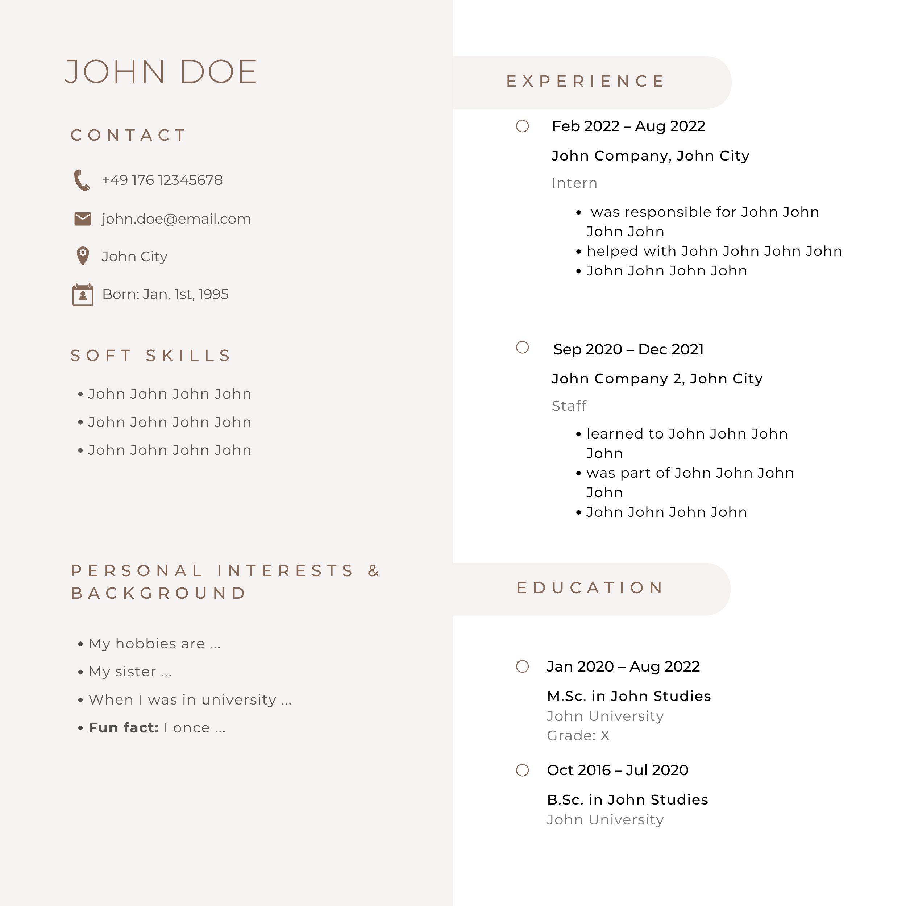

Attention Allocation in Hiring Decisions:
An Eye-Tracking Study of Role Influence
Informed Consent
Study Purpose: This study investigates eye movement patterns during various visual tasks. Your participation will help us understand how people process visual information.
What you will do: You will view images and make choices while we track your eye movements using your camera. The study takes approximately 15-20 minutes.
Privacy: Your eye tracking data will be anonymized and used only for research purposes. Your camera feed is processed locally and not stored.
Voluntary Participation: You may withdraw at any time without penalty. There are no known risks associated with this study.
Technical Requirements: Please ensure you have good lighting and position yourself comfortably in front of your camera.
By clicking "Agree and Participate", you consent to participate in this study. The web application will automatically enter fullscreen mode.
Select Study Mode
Please choose one of the following study modes:
Mode 1
CV order 1,2,3,4; Manager first, then Employee
Mode 2
CV order 2,1,4,3; Manager first, then Employee
Mode 3
CV order 1,2,3,4; Employee first, then Manager
Mode 4
CV order 2,1,4,3; Employee first, then Manager
Example CV
This is a sample CV. Please take a moment to look at it before starting the actual task.

Please look at each red dot and click on it when it appears. Keep your head still and look directly at each point.
Make Your Choice
Based on what you've seen, who would you hire:
Candidate 1
Candidate 2
Take a Break
You're halfway through the study! Take a moment to relax.
When you're ready, click continue to proceed with the second part of the study.
Example CV
This is a sample CV. Please take a moment to look at it before starting the actual task.
Please look at each red dot and click on it when it appears. Keep your head still and look directly at each point.
Make Your Choice
Based on what you've seen, who would you hire:
Candidate 1
Candidate 2
Study Complete!
Thank you for participating in our eye tracking study. Your data has been collected successfully.
You can now download your gaze tracking data or finish the study.